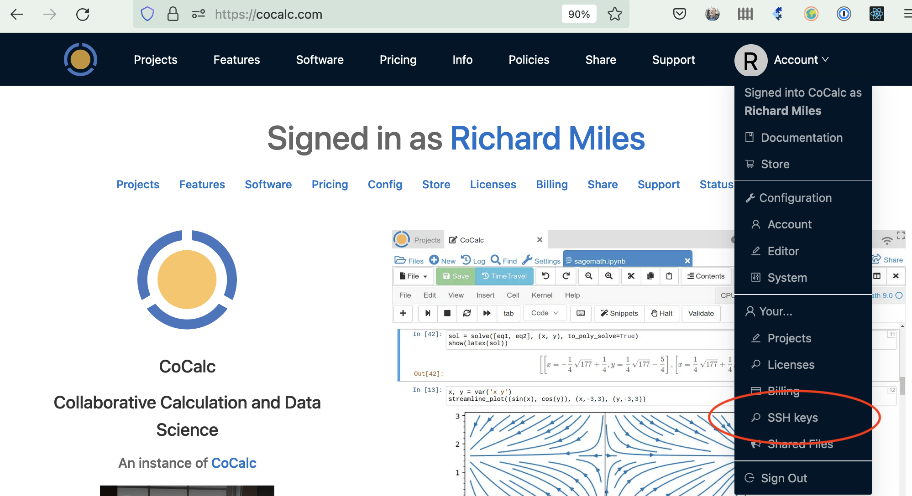
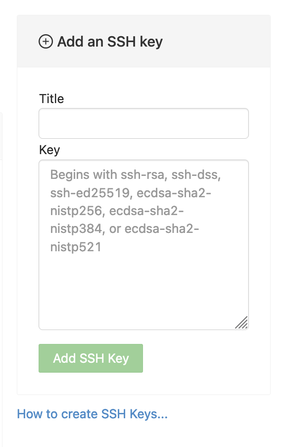

SSH keys
This section assumes you have created an SSH key pair as described in SSH Keys.
Add SSH public keys for your account
To add SSH public keys for your CoCalc account you can either browse to https://cocalc.com/settings/ssh-keys, or open the Account Dropdown Menu and select “SSH keys”:
Enter a title for the key in the Title field. Specify a title that is meaningful to you for the key pair you are using, for example, “John’s CoCalc Key”. Copy the public key into the Key field. To do this, open the file for your public key on your local computer. For example, if you are using macOS or Ubuntu, you could open a terminal and type something like the following, depending on the name of your public key file:
cat ~/.ssh/id_ed25519.pub
Use your mouse to highlight the contents of the key file, then copy and paste it into the Key area. Click “Add SSH Key”.
Your key is now saved for that account and will work for all projects for which that account has owner or collaborator status.
Note
If you want to add an SSH key that applies to just one project, and not to all the projects your account has access to see: Configuring SSH Keys for a Single Project.
SSH login for a project
To connect to a project from your local computer, use the project id with hyphens removed for the user, followed by ‘ssh.cocalc.com’ as the hostname. This string can be found at under Project settings, as shown here: ssh user.
View account SSH keys
To view SSH keys configured for your account, open the same screen that you would to add keys for your account: Add SSH public keys for your account.
SSH keys configured for a single project are viewed under Project settings.
Display local public key fingerprints
When you upload SSH public keys to your CoCalc account, CoCalc displays a fingerprint to identify the key. If you have a large number of public keys on your local computer, it may help to run a command to display the hexadecimal fingerprints locally, so that you can see which local public key file corresponds to a certain key fingerprint in your CoCalc account. Here is a command you can run if you have the OpenSSH tools installed, for example on Linux or macOS:
ssh-keygen -l -E md5 -f <filename>.pub
If your public keys are stored under .ssh in your home directory, the following script will display the name of each public key file followed by its fingerprint:
for k in ~/.ssh/*.pub; do echo $k;ssh-keygen -l -E md5 -f $k;echo;done

{kind=link}
{kind=link}